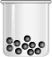
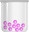

| {{item.name}} |
| الكتلة = {{item.bloc}} |
| {{item.blocAverage}} |
| {{item.ratio}} |
| {{item.ratio1}} |
| {{item.atomicMass}} |
| {{item.atomicMass1}} |
أدوات التجربة
كتلتها55.49

كتلتها56.33
كتلتها55.60
